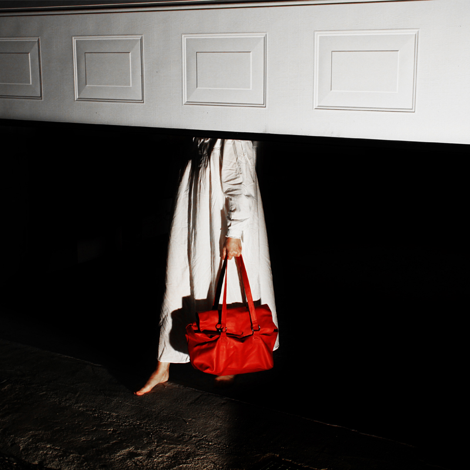
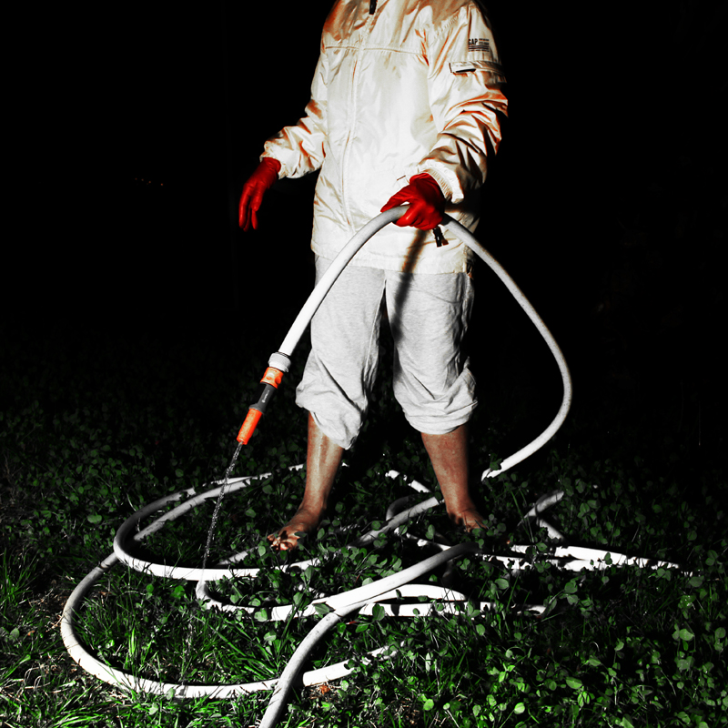
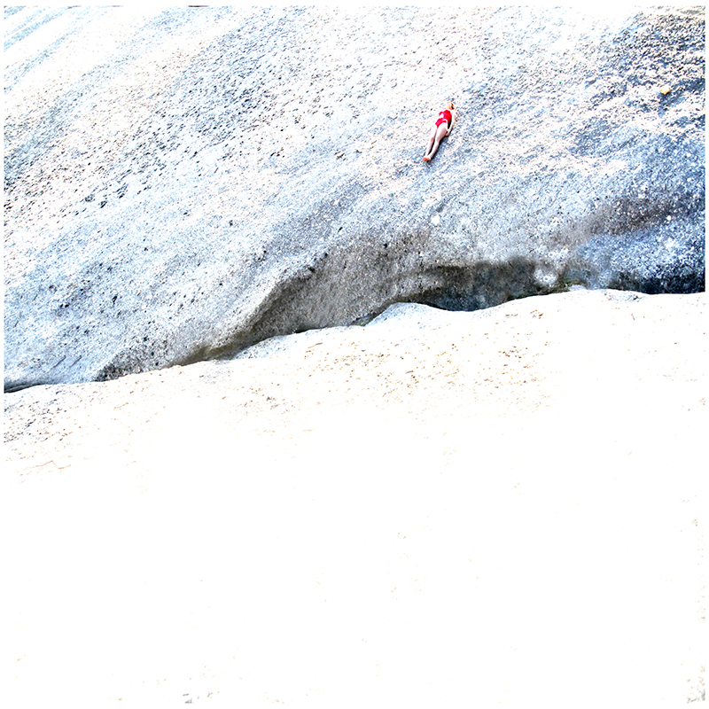
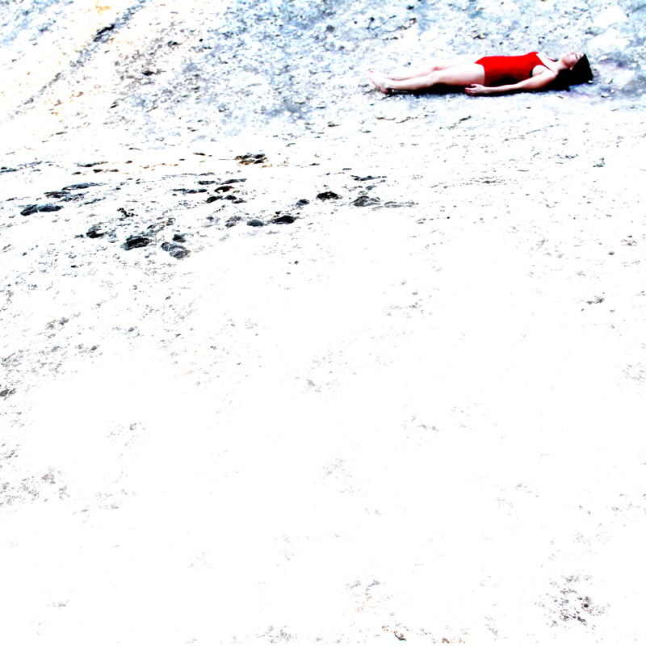
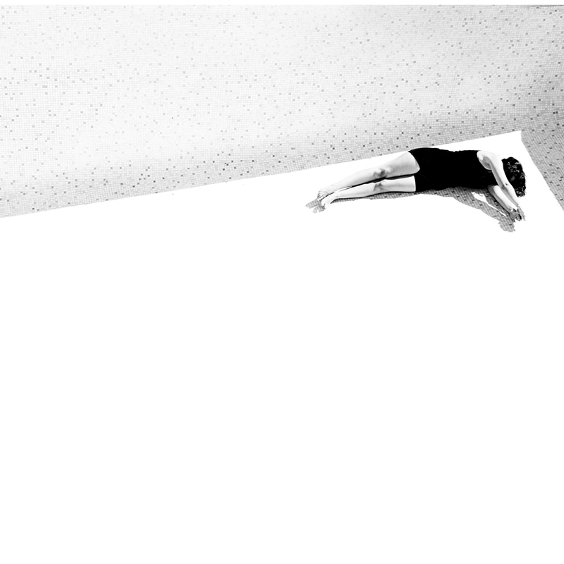
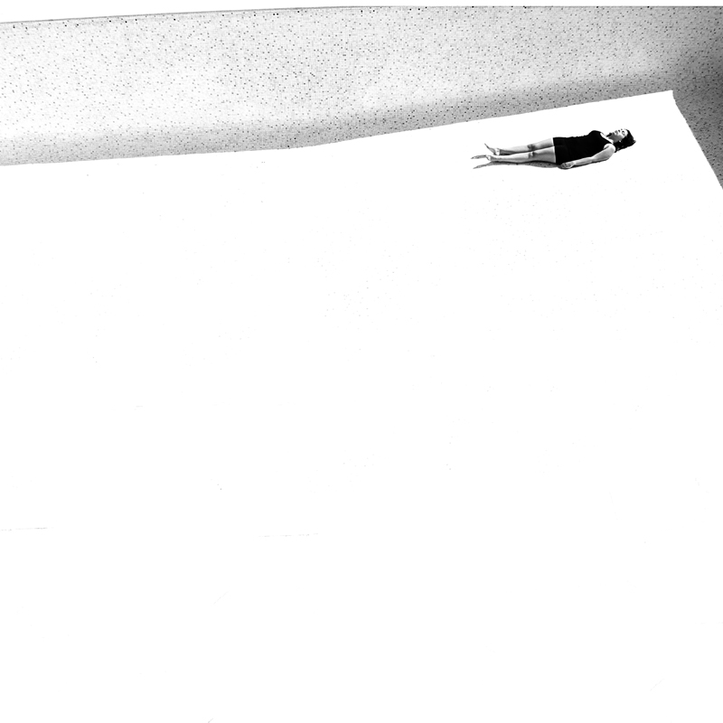
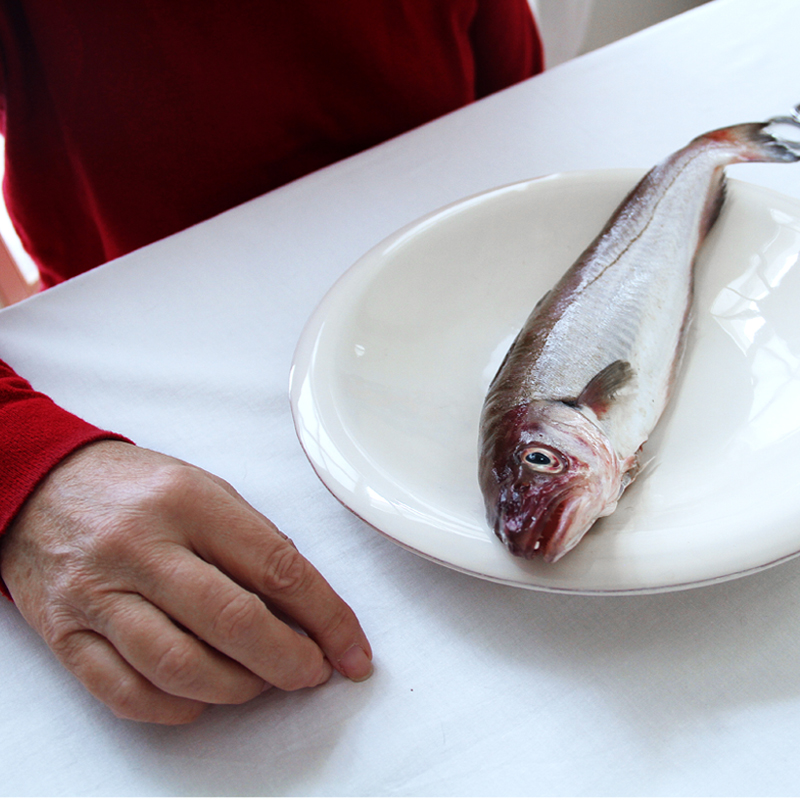

A PROPOS
Après l'obtention de mon DNAP, Diplome Nationale d'Arts Plastiques,
aux Beaux arts de Monaco, je continue mon cursus Master à l'ECV.
La mise en scène m’intéresse énormément, grâce à elle je travaille sur la narration.
J’aime produire de l’étrangeté avec du réel et composer des mises en scènes mystérieuses
sans tomber dans la fictionalisation.
Je fige des instants du quotidien et avec très peu d’éléments, je créé des scènes avec des indices
sur l’état psychologique de mes personnages.
Couper les visages renvoi en terme de lecture à une idée de ne pas donner d’identité,
laisser au spectateur la possibilité d’y mettre l’identité qu’il souhaite.
Comme dans un rêve où on ne voit pas les visages, ne pas avoir l’identité nous perturbe un peu plus,
et crée ainsi une sorte de frustration.
Je veux un résultat improbable, imaginaire avec un décalage avec la réalité.
- 
- 
- 
- 
- 
- 

- 